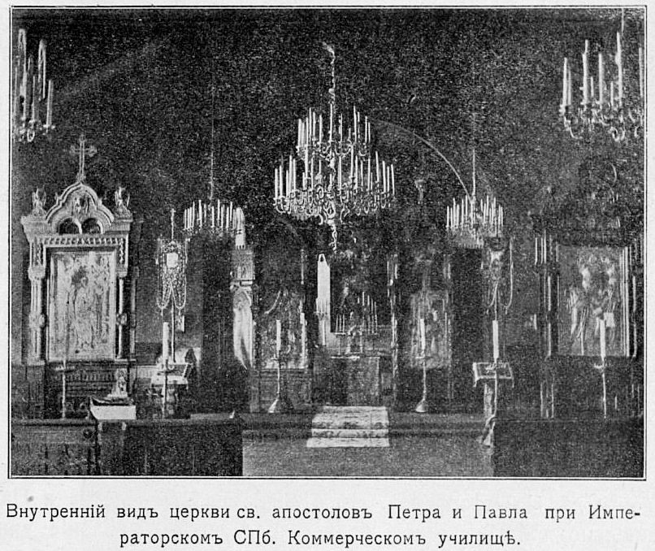
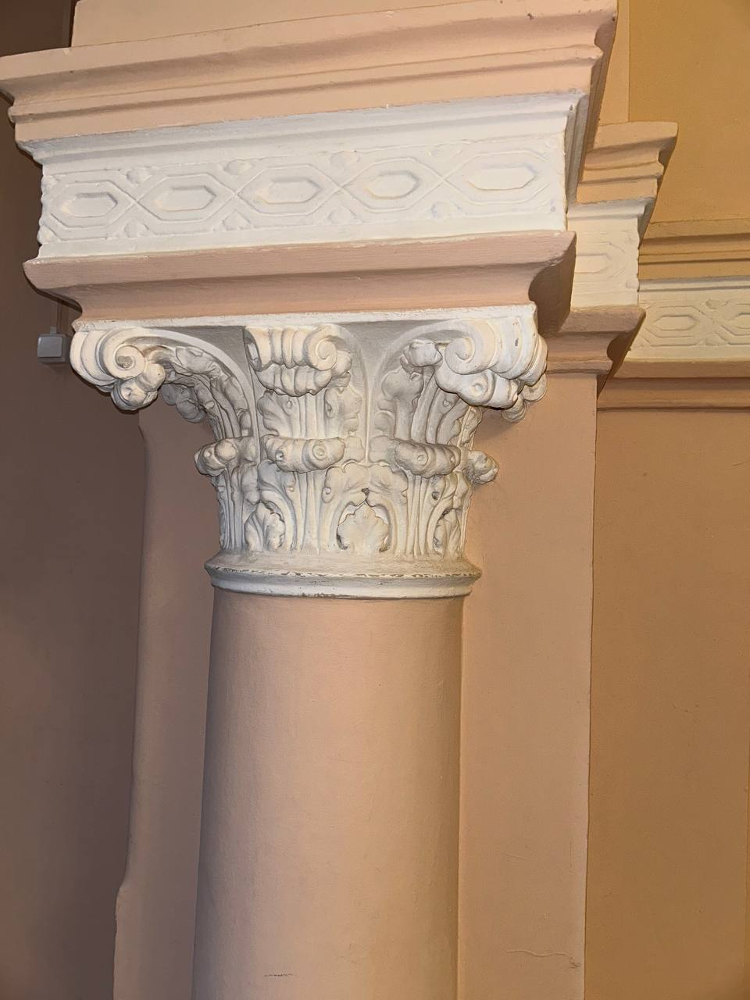

Ломоносова д.9
Здание было построено в первой половине XIX в., а нынешний облик обрело в 1871 г. по проекту архитектора Михаила Макарова. При этом, как можно судить из старых снимков и историко-культурной экспертизы, тогда не удалось осуществить задуманный зодчим облик кованого крыльца у главного входа. Был выполнен другой вариант — пониже. Но и он не сохранился до наших дней: в советское время во второй половине XX в. его снесли.
История становления здания в корпус ИТМО
"Коммерческое училище (у Пяти Углов, на Загородном просп.) состоит в ведении Е.И.В. Принца Петра Ольденбургскаго, носящаго звание Попечителя и председательствующаго в Совете Училища. Оно торжествовало в мае 1849 г. пятидесятилетие со времени учреждения. В штатные воспитанники Училища принимаются, по жребию баллотирования, состоящие в Российском подданстве, не моложе 10-ти и не старее 12-ти лет, законные сыновья обедневших купцов и мещан, бывших в купечестве, но выбывших из онаго по разным несчастным обстоятельствам; если же из таковых не явится достаточнаго числа кандидатов, то принимаются и законные сыновья бедных мещан, производивших прежде торговлю. От желающих поступить требуются некоторыя предварительныя познания, испытуемыя на экзамене. В пансионеры принимаются законные сыновья чиновников и всех лиц свободных состояний, как Российских подданных, так и иностранцев, не моложе 9-ти и не старее 16-ти лет, и по мере их познаний, размещаются в соответственные классы. Прием штатных воспитанников производится с конца июня до начала августа, по просьбам, по данным с 1-го марта до 1-го мая, в Канцелярию Училищнаго Совета."
Ул. Ломоносова 9, лит. А (учебный корпус 2)
Корпус в XIX — XX вв.
Место, где расположен Университет, в XVIII в. находилось за городской чертой, а позднее относилось к Московской части Петербурга. В 1869 - 1871 годах "на месте деревянных строений и очень старых деревьев", примыкавших к Чернышеву переулку, был построен главный корпус коммерческого училища. Его возведение осуществлялось на средства опекунского совета и личные пожертвования императора Александра II по проекту академика архитектуры М.А. Макарова. Училище давало семилетнее образование и специализацию в области коммерческой деятельности. Фасад здания училища, выполненный в стиле романского зодчества, тремя огромными окнами выходит на улицу Ломоносова. Он стал своеобразной визитной карточкой Университета низкотемпературных и пищевых технологий, разместившегося здесь в 1931 г.
Санкт-Петербургское Коммерческое училище. Генеральный план. 1869 г.
Во время Великой Отечественной Войны, до марта 1942 г., институт продолжал работать. В июне 1941 г. здесь сформировался 1-й Стрелковый полк 3-й Фрунзенской дивизии армии народного ополчения города Ленинграда, о чем свидетельствует мемориальная доска на главном фасаде.
Команда местной противовоздушной обороны, состоявшая из студентов и сотрудников, самоотверженно спасала здание от пожаров. Прямое попадание снарядов и зажигательных бомб вызвало значительные разрушения. Ленинградский институт холодильной промышленности (созданный в 1934 г. и во многом являвшийся наследником Императорского коммерческого училища), внес значительный вклад в победу в Великой Отечественной войне (1941-1945 гг.). Так, в годы ленинградской блокады не одну жизнь спасли разработанные в институте технологии получения соевого молока и шрота для детей и раненых, а также рецепт блокадного хлеба. На базе института был создан цех по производству зажигательных гранат-бутылок. В марте 1942 г. институт был эвакуирован в Кисловодск, а затем в Семипалатинск, где располагался до июля 1944 г.
Церковь во имя святых апостолов Петра и Павла (аудитория 2202)
Домовая церковь ап. Павла освящена 15 октября 1800 г., но после переноса в новое здание вновь освящена 14 октября 1838 г. уже как Петропавловская. При последнем расширении училища перенесена в центральную часть нового здания.

В 1861 г. был объявлен конкурс на постройку нового здания училища. Его заложили летом 1869 г. по проекту акад. М. А. Макарова, который отвел для церкви с хорами место в центре второго этажа, в выступе, оформленном романскими проемами. 31 августа 1871 г. храм был освящен митрополитом Исидором в присутствии попечителя училища - принца П. Г. Ольденбургского. Стены храма вмещали 450 человек. Потолок был выполнен из орехового дерева, по деревянным стропилам с подкосами и со сплошной обшивкой скатов, не расписан. Стены храма расписаны в византийском стиле и украшены фресками, двухъярусный иконостас вырезан из темного ореха; образа использованы в основном прежние, перенесенные из находившейся неподалеку старой домовой церкви, новые образа написал А.М. Лушев. Известно, что на момент освящения храма в 1871 г. в тринадцати окнах верхнего света находились «матовые транспаранты». Это были фигуративные витражи, выполненные в неустановленной технике с изображениями Христа, сидящего на троне и двенадцати апостолов. Свет падал через витражи, а вечером освещение давали пять люстр из золоченой бронзы. Императрица Мария Феодоровна завещала храму большую мозаичную икону Божией Матери с Младенцем. Кроме воспитанников училища, в храме молились гимназистки соседней Мариинской гимназии.
В мае 1918 г. церковь стала приходской, закрыта в начале 1919 г., а в 1924 г. ликвидирована и отдана под клуб.
В помещениях бывшей церкви длительное время располагался актовый зал университета.
Ломоносова д.9 в период СССР
С 1931 г. в здании находился Ленинградский технологический институт холодильной промышленности. В том же году здание со стороны двора было надстроено двумя этажами. Во время блокады Ленинграда в здание были прямые попадания снарядов и зажигательных бомб, работы по восстановлению были начаты с 1944 г. В 1960-е гг. были реконструированы трёх- и четырёхэтажные флигели, в 1970-е гг. был разобран металлический зонтик на витых колонках над парадным входом, в 1974 г. построен пятиэтажный корпус, в 1979 г. началось строительство ещё одного 2-5-тиэтажного корпуса, соединённого с главным зданием переходом (архитектор В. С. Маслов).
Ломоносова 9, лит. А
1 этаж здания
При входе в здание открывался обширный вестибюль и «шестиаршинный коридор», к которому примыкали учебные классы. На первом этаже помещались столовая, гимнастический зал, правление училища.
Зал физкультуры, 1949 г.
2 этаж
На втором этаже лицевого корпуса располагалась церковь, конференц-зал, кабинет естественной истории.
3 этаж
Третий этаж здания отводился под спальни. Исторически эта часть здания имела три этажа, верхние два этажа были надстроены в советские годы.
Другие части корпуса
В остальных корпусах, выходящих во двор и сад, находились классы, рекреационные залы, библиотека, помещения для учебно-вспомогательных учреждений.

Ломоносова 9, лит. М (учебный корпус 1)
Здание возводилось в период с 1986 г. по 1989 г. Первоначально именовалось как Главный учебный корпус.
Ломоносова 9, лит. В (учебно-лабораторный корпус 3)
Здание первоначально именовалось как корпус 3 лаборатории глубокого холода. В 1968 г. по проекту Гипрорыбпром было реконструировано из существующего жилого трехэтажного дома с подпольем под лабораторию.
Ломоносова 9, лит. Б (учебный корпус 4)
В 1969 г. по проекту Ленгипропищепром здание было реконструировано из существующего двухэтажного жилого дома с чердаком и подвалом.
Библиотека
1 декабря 2020 г. в корпусе ИТМО на Ломоносова открылась обновленная библиотека c открытым фондом. Там можно читать, работать за компьютером в тишине или взять книги себе домой.
Коворкинг на 3 этаже
24 ноября 2020 г. в корпусе ИТМО на Ломоносова открылся новый коворкинг с общей зоной, двумя конференц-залами и несколькими переговорными комнатами. Коворкинг находится на 3 этаже в корпусе на Ломоносова, 9 слева от главной лестницы. Его самое большое пространство — co-creating space, где можно разместиться как со своим ноутбуком, так и за одним из стационарных компьютеров. Для работы со своим компьютером или общения здесь есть общие столы с отдельными стульями, диваны со столами на 4-6 человек и несколько пуфов. Рядом со всеми местами расположены розетки, к которым можно подключить технику.
Студофис и коворгинг студофиса
Студенческий офис, работающий в Университете ИТМО с августа 2019 г., переехал в новое помещение. На 4 этаже корпуса на улице Ломоносова функционирует современное креативное пространство, где студенту помогут решить любой вопрос с документами, оплатой обучения, проживанием в общежитии и академической задолженностью. Кроме того, в студенческом офисе расположен уютный коворкинг, где можно обсудить проекты, подготовиться к занятиям и просто отдохнуть в перерыве между парами.
Актовый зал
Актовый зал на Ломоносова 9 открылся 5 апреля 2016 г. Здесь каждый год проходит MEGABATTLE. Кроме того, некоторые лекции и мероприятия так же проводятся в актовом зале ИТМО.
Химико-биологический кластер
В 2014 г. при научной поддержке Давида Авнира из Еврейского университета ,братья-химики Владимир и Александр Виноградовы открыли химическую лабораторию в ИТМО.
В 2015 г. здесь были запущены независимые ученые группы, сфокусированные на золь-гель химии, теоретической химии и струйной печати.
Ученые открыли ранее неизвестный механизм воскрешения белка, создали магнитные плёнки для создания жёстких дисков будущего и нанокомпозиты с улучшенными показателями управления в магнитном поле.
В 2016 г. в университете создали целый химико-биологический кластер, научно-образовательный центр, включающий несколько лабораторий и магистерско-аспирантскую кафедру химии и биотехнологии.
В 2019 г. здесь провели масштабные конференции по химии: SOL-GEL 2019 и MENDELEEV 150. В 2020 г. учёные создали «умный» материал, который ускоряет заживление ран, разработали препарат, который в случае инфаркта или инсульта может доставить лекарственные вещества к необходимым местам для растворения тромбов в четыре тысячи раз эффективнее, чем другие препараты. В 2022 г. в кластере разработали первый в мире сервис по моделированию свойств нанозимов, новый метод синтеза материалов с заданными свойствами и подход для нахождения новых наноматериалов с заданными свойствами.
Лаборатории физики
1 сентября 2015 г. на Ломоносова 9 открылись две лаборатории механики, две лаборатории молекулярной физики и лаборатория электричества и магнетизма. Стенды, установленные в лабораториях, позволяют выполнять практические работы разной степени сложности в зависимости от уровня подготовки студентов. На установках можно проводить исследования различных видов движения и колебания, моментов инерции и сил трения, изучать сопротивление металлов и полупроводников, свойства сегнетоэлектриков, вязкость воздуха, поверхностное натяжение и так далее – всего 6 различных направлений лабораторных работ по механике, 12 по изучению электричества и магнетизма и 5 – по молекулярной физике.